Costa Blanca · Santa Pola
Immobilien zum Verkauf in Santa Pola
Neue Wohnungen wenige Schritte vom Strand und vom Hafen und Häuser mit Aussicht in Gran Alacant, 15 Minuten vom Flughafen Alicante. Hier finden Sie die Immobilien, die wir heute in Santa Pola verkaufen, mit einem kurzen Überblick über die Viertel und die echten Kaufkosten.
- 15Immobilien zum Verkauf in Santa Pola
- ab 205.000 €für eine neue Wohnung
- ca. 15 Min.zum Flughafen Alicante-Elche
- Tabarcaeine Insel, kurze Bootsfahrt entfernt
Jetzt zu verkaufen
Immobilien zum Verkauf in Santa Pola
Neue Wohnungen und Penthäuser mit 1 bis 3 Schlafzimmern, die meisten weniger als einen Kilometer vom Strand, und Reihenhäuser, Bungalows und Villen in Gran Alacant. Die Preise sind die heutigen Angebotspreise; fragen Sie uns nach der aktuellen Verfügbarkeit.
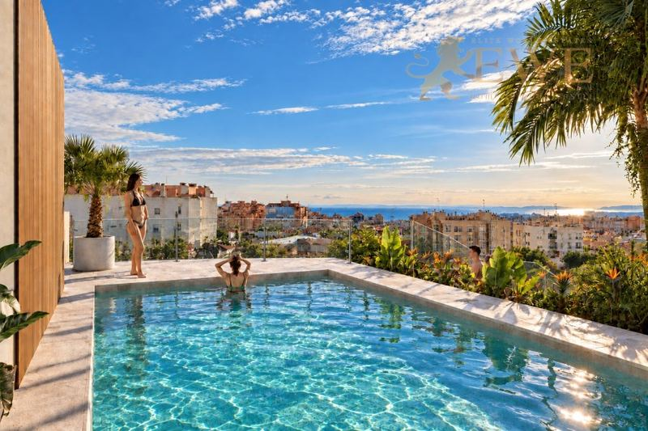
EWE3902Santa Pola
Modern apartments 800 m from the beach and port in Santa Pola
205.000 €
1 Schlafzimmer · 1 Bad · 59 m²Ref. EWE3902
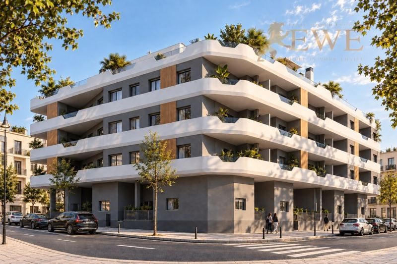
EWE3904Santa Pola
Excellent apartments 800 m from the beach and port in Santa Pola
235.000 €
2 Schlafzimmer · 1 Bad · 64 m²Ref. EWE3904
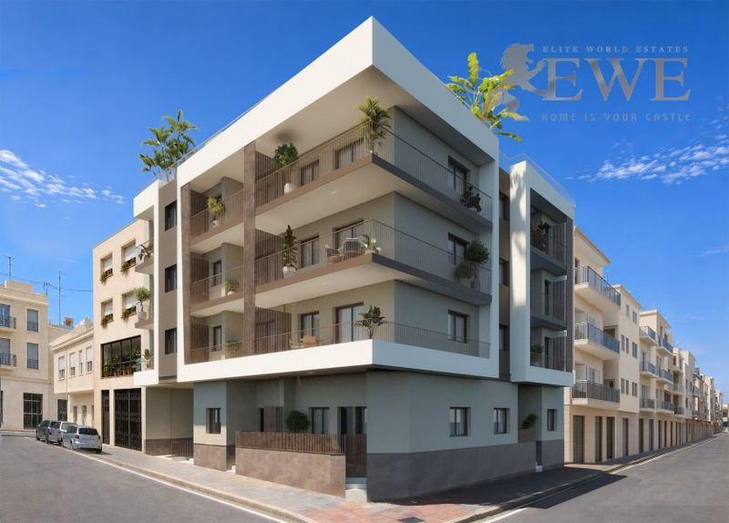
EWE3822Santa Pola
New Apartments 300 m from the Beach and Marina in the Heart of Santa Pola
248.000 €
2 Schlafzimmer · 2 Bäder · 70.05 m²Ref. EWE3822
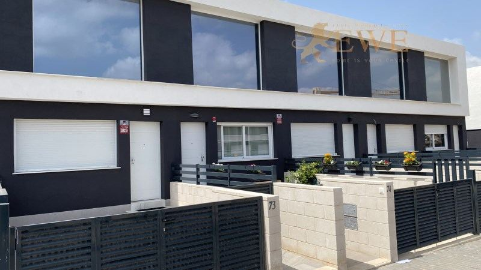
EWE3588Santa Pola
Modern terraced house in Gran Alacant
289.000 €
3 Schlafzimmer · 2 Bäder · 110 m²Ref. EWE3588
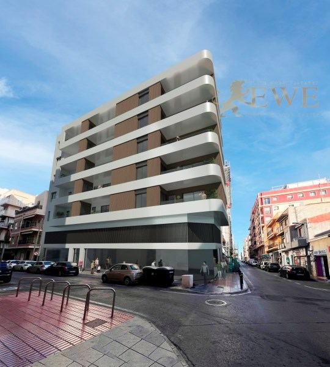
EWE3489Santa Pola
Modern apartment 500 m from the beach in the centre of Santa Pola
292.015 €
2 Schlafzimmer · 2 Bäder · 71.7 m²Ref. EWE3489
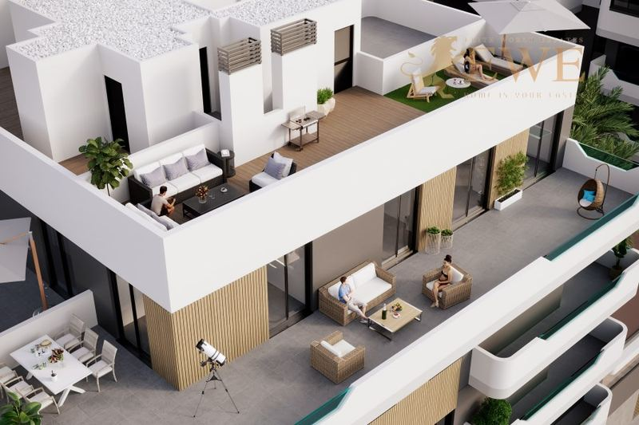
EWE3309Santa Pola
Excellent flat in the centre of Santa Pola
298.000 €
2 Schlafzimmer · 2 Bäder · 62 m²Ref. EWE3309
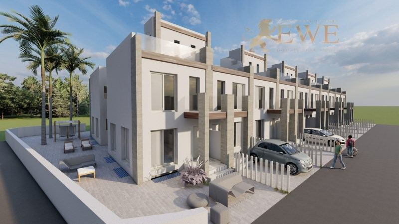
EWE2320Santa Pola
Super comfortable semi-detached house near the beach in Gran Alacant
306.000 €
2 Schlafzimmer · 2 Bäder · 106 m²Ref. EWE2320
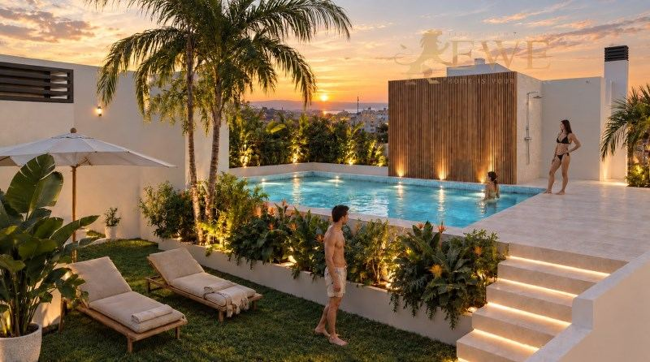
EWE3903Santa Pola
New apartments with a rooftop pool near the beach in Santa Pola
315.000 €
3 Schlafzimmer · 2 Bäder · 87 m²Ref. EWE3903
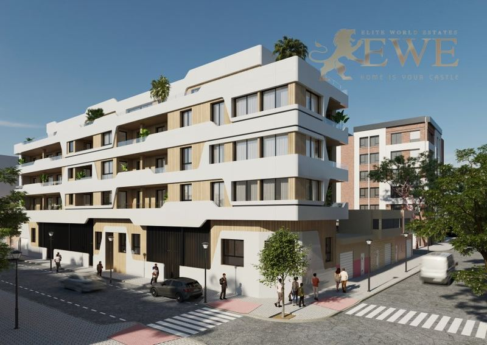
EWE3834Santa Pola
New Penthouse for Sale 900 m from the Beach in Santa Pola
325.000 €
2 Schlafzimmer · 2 Bäder · 63 m²Ref. EWE3834
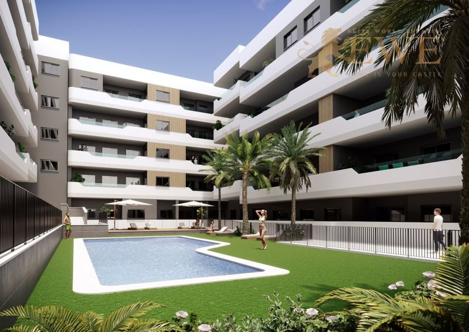
EWE3310Santa Pola
Modern apartment in the centre of Santa Pola
330.000 €
2 Schlafzimmer · 2 Bäder · 91 m²Ref. EWE3310
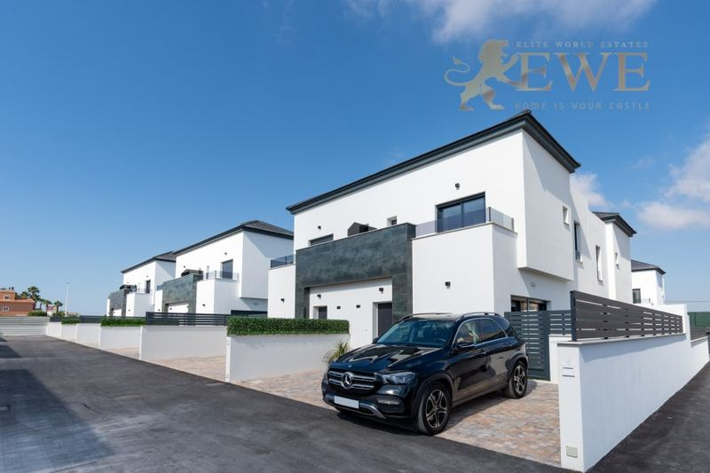
EWE1725Santa Pola
A picturesque bungalow in Gran Alacant
350.000 €
3 Schlafzimmer · 3 Bäder · 88 m²Ref. EWE1725
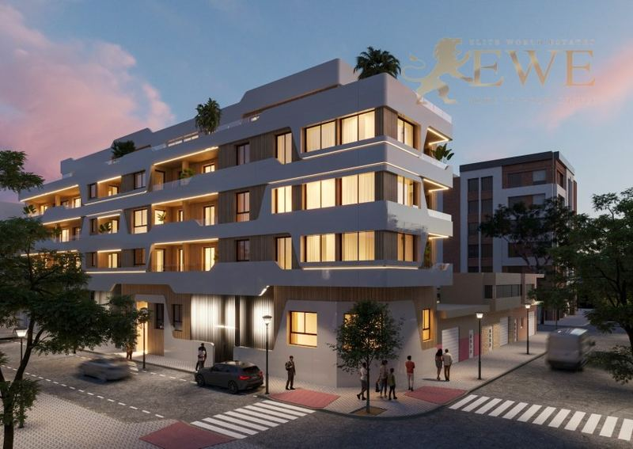
EWE3833Santa Pola
New Apartments for Sale 900 m from the Beach in Santa Pola
380.000 €
3 Schlafzimmer · 2 Bäder · 83.4 m²Ref. EWE3833
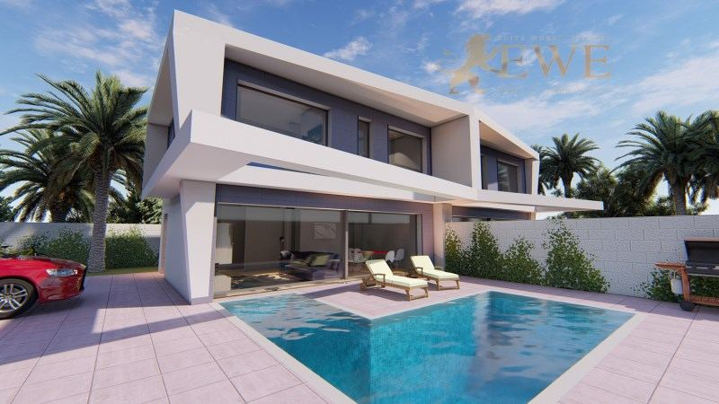
EWE1830Santa Pola
Semi-detached villa in Gran Alacante, Santa Pola
435.000 €
4 Schlafzimmer · 3 Bäder · 108 m²Ref. EWE1830
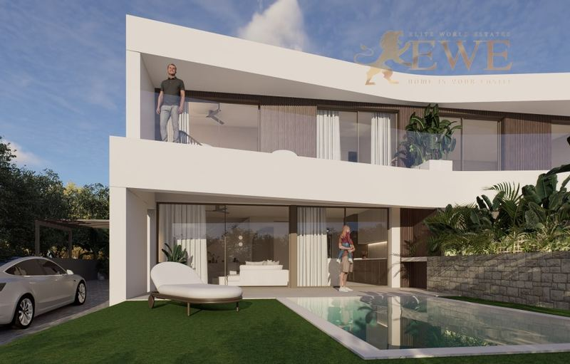
EWE3587Santa Pola
Modern villa for sale in Gran Alacant
570.000 €
3 Schlafzimmer · 2 Bäder · 130 m²Ref. EWE3587
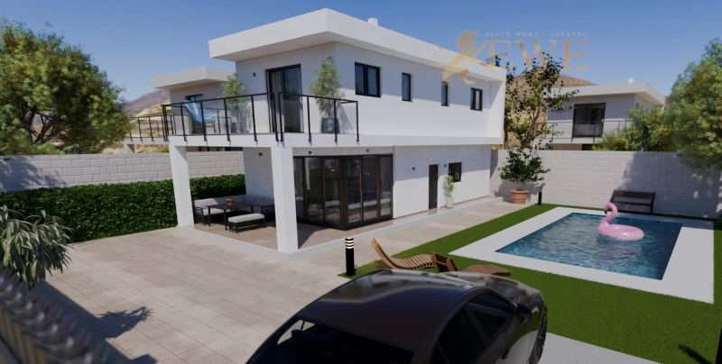
EWE1860Santa Pola
Modern design house in Gran Alacant
792.000 €
4 Schlafzimmer · 3 Bäder · 199 m²Ref. EWE1860
Die Stadt
Leben in Santa Pola
Santa Pola ist eine Küstenstadt mit rund 38.000 Einwohnern gleich südlich von Alicante. Sie hat eine der größten Fischereiflotten der Küste, einen belebten Hafen mit Fischrestaurants und lange Sandstrände entlang der Bucht.
Hinter der Stadt liegt der Naturpark Salinas de Santa Pola, ein weites Gebiet aus Salinen, in dem fast das ganze Jahr Flamingos leben. Vom Hafen fahren Boote zur kleinen Insel Tabarca, einem Meeresschutzgebiet mit klarem Wasser. Auf dem Kap über der Stadt liegt Gran Alacant, ein großes Wohngebiet mit Meerblick.
Das Leben läuft hier das ganze Jahr, mit Geschäften, Märkten und Versorgung im Zentrum. Der Flughafen Alicante-Elche ist mit dem Auto nur etwa 15 Minuten entfernt, die Stadt Alicante etwa 25 Minuten.
Wo kaufen
Die wichtigsten Viertel von Santa Pola
Zentrum und Hafen
Der Hafen, der Fischmarkt und das alte Zentrum, mit Geschäften und Restaurants zu Fuß. Wohnungen nahe am Strand.
Playa de Levante
Der lange Sandstrand östlich des Hafens, mit Promenade. Wohnungen und Penthäuser nahe am Meer.
Gran Alacant
Ein großes Wohngebiet auf dem Kap über Santa Pola, mit Meerblick. Reihenhäuser, Bungalows und Villen.
Santa Pola del Este
Ein ruhigeres Viertel auf dem Kap, mit Buchten und Häusern nahe am Meer.
Budget
Was der Kauf in Santa Pola kostet
Zum Kaufpreis kommen Steuern und Gebühren. Für eine neue Immobilie zu 292.015 € sind das zum Beispiel 29.202 € Mehrwertsteuer und 4.088 € Stempelsteuer, dazu Notar, Grundbuch und Anwalt. Für Bestandsimmobilien gelten andere Steuern, fragen Sie uns also immer nach der genauen Summe für die Immobilie, die Ihnen gefällt.
| Neubau | 10 % Mehrwertsteuer (IVA) + 1,4 % Stempelsteuer (AJD) |
|---|---|
| Bestandsimmobilie | 9 % Grunderwerbsteuer (ITP), 11 % über 1 Mio. € |
| Notar, Grundbuch, Anwalt | ca. 1,5–2,5 % des Preises |
| Jedes Jahr | Grundsteuer IBI und Gemeinschaftskosten, je nach Immobilie |
Fragen
Immobilienkauf in Santa Pola: Fragen und Antworten
Was kostet eine Wohnung in Santa Pola?
Unsere neuen Wohnungen in Santa Pola beginnen heute bei 205.000 €, die meisten mit 2 oder 3 Schlafzimmern kosten zwischen 235.000 € und 380.000 €. Häuser in Gran Alacant kosten etwa 289.000 € für ein Reihenhaus bis 792.000 € für eine moderne Villa.
Liegt Santa Pola nahe am Flughafen?
Ja, es ist einer der Strandorte, die dem Flughafen Alicante-Elche am nächsten liegen, etwa 15 Minuten mit dem Auto. Das ist praktisch für Kurzreisen und für die Vermietung.
Was ist Gran Alacant?
Gran Alacant ist ein Wohngebiet auf dem Kap über Santa Pola, mit Häusern und Wohnungen, Geschäften und Restaurants und Blick über das Meer und die Salinen. Es liegt etwa 10 Minuten von Santa Pola und vom Flughafen entfernt.
Welche Kosten kommen zum Kaufpreis hinzu?
In der Region Valencia zahlen Sie bei einem Neubau 10 % Mehrwertsteuer und 1,4 % Stempelsteuer, bei einer Bestandsimmobilie 9 % Grunderwerbsteuer (11 % über 1 Mio. €). Notar, Grundbuch und Anwalt kosten zusammen etwa 1,5–2,5 %.
Können Ausländer in Santa Pola eine Immobilie kaufen?
Ja. Jeder kann in Spanien eine Immobilie kaufen. Sie brauchen eine spanische Steuernummer (NIE) und meist ein spanisches Bankkonto, und wir helfen Ihnen bei beidem. Mehr dazu in unserem Ratgeber zur NIE-Nummer.


Sie suchen ein Zuhause in Santa Pola?
Nennen Sie uns Ihr Budget und Ihre Wünsche. Wir antworten innerhalb eines Werktags, auf Deutsch, Englisch, Spanisch oder Polnisch.